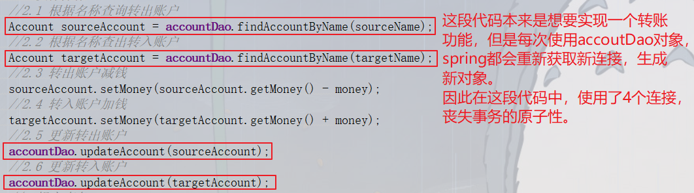

完善我们的account案例
//增加一个转账操作
public void transfer(String sourceName, String targetName, Float money) {
//1.根据名称查询转出账户
Account sourceAccount = accountDao.findAccountByName(sourceName);
//2.根据名称查出转入账户
Account targetAccount = accountDao.findAccountByName(targetName);
//3.转出账户减钱
sourceAccount.setMoney(sourceAccount.getMoney() - money);
//4.转入账户加钱
targetAccount.setMoney(targetAccount.getMoney() + money);
//5.更新转出账户
accountDao.updateAccount(sourceAccount);
//6.更新转入账户
accountDao.updateAccount(targetAccount);
}
分析案例中的问题
细节
连接池：把消耗时间获取连接的部分放到应用加载的开始部分。
在web工程时，启动tomcat加载应用时，创建一些连接，从而在后续项目应用时，不再跟数据库获取连接，保证使用connection时的执行效率
在服务器中，有线程池，当tomcat启动时，会初始化许多线程放入线程池，之后的访问直接从线程池获取
问题

解决方法：创建一个事务管理器和一个连接管理器
连接管理器：将连接和当前线程绑定
事务管理器：从连接管理器获取连接，针对当前连接进行事务控制
注意：
连接关闭并不等于当前线程上没有连接，只不过是连接关闭，还回线程池
正确方法是在关闭连接后，将线程和连接解绑
回顾之前讲过的一个技术：动态代理
代理模式的概念
代理(Proxy)是一种设计模式,提供了间接对目标对象进行访问的方式;即通过代理对象访问目标对象.这样做的好处是:可以在目标对象实现的功能上,增加额外的功能补充,即扩展目标对象的功能.
三种代理模式
静态代理、动态代理、Cglib代理
静态代理方式
在使用静态代理时,被代理对象与代理对象需要一起实现相同的接口或者是继承相同父类，因此要定义一个接口或抽象类.
// 接口
interface IStar {
void sing();
}
// 真实对象
class LDHStar implements IStar {
@Override
public void sing() {
System.out.println("刘德华唱歌");
}
}
// 代理类需要有真实对象的控制权 (引用)
class ProxyManger implements IStar {
// 真实对象的引用
private IStar star;
public ProxyManger() {
super();
}
public ProxyManger(IStar star) {
super();
this.star = star;
}
@Override
public void sing() {
System.out.println("唱歌前准备");
star.sing();
System.out.println("善后工作"); }
}
class Test{
public static void main(String[] args) {
// 创建明星对象
IStar ldh = new LDHStar();
ProxyManger proxy = new ProxyManger(ldh);
proxy.sing();
}
}
动态代理
基于接口的动态代理
涉及的类：Proxy
提供者：JDK官方
如何创建代理对象
使用Proxy类中的newProxyInstance方法
创建代理对象的要求：
被代理类最少实现一个接口，如果没有则不能使用
newProxyInstance方法的参数
ClassLoader：类加载器
它是用于加载代理对象字节码。和被代理对象使用相同的类加载器,固定写法
Class[]：字节码数组
它是用于让代理对象和被代理对象有相同方法。和被代理对象使用相同的接口，固定写法
InvocationHandler：用于提供增强的代码
它是让我们写如何代理。我们一般都是写一个该接口的实现类，通常情况下都是匿名内部类，但不是必须的
此接口的实现类都是谁用谁写。
final Producer producer = new Producer();
IProducer proxyProducer = (IProducer) Proxy.newProxyInstance(producer.getClass().getClassLoader(), producer.getClass().getInterfaces(), new InvocationHandler() {
/**
* 执行被代理对象的任何接口方法都会经过该方法
* @param proxy 代理对象的引用
* @param method 被代理对象方法
* @param args 被代理对象方法的参数
* @return 被代理对象方法的返回值
* @throws Throwable
*/
public Object invoke(Object proxy, Method method, Object[] args) throws Throwable {
//提供增强的代码
Object returnValue = null;
//1.获取方法执行的函数
Float money = (Float)args[0];
//2.判断当前方法是不是销售
if("sellProduct".equals(method.getName())){
//调用原先方法进行方法增强
//producer是被代理对象
returnValue = method.invoke(producer,money*0.8f);
}
return returnValue;
}
});
Cglib代理
基于子类的动态代理
涉及的类：Enhancer
提供者：第三方cglib库
如何创建代理对象
使用Enhancer类中的create方法
创建代理对象的要求：
被代理类不能使最终类
create方法的参数
Class：字节码
它是用于指定被代理对象的字节码
Callback：用于提供增强的代码
它是让我们写如何代理。我们一般都是写一个该接口的实现类，通常情况下都是匿名内部类，但不是必须的
此接口的实现类都是谁用谁写。
一般写的都是该接口的子接口的实现类：MethodIntercepter
final Producer producer = new Producer();
Producer cglibProducer = (Producer) Enhancer.create(Producer.class, new MethodInterceptor() {
/**
* 执行被代理对象的任何方法都会经过该方法
* @param o 代理对象的引用
* @param method 代理对象当前执行方法的方法
* @param args 代理对象当前执行方法的参数
* 以上三个参数和基于接口的动态代理中invoke方法的参数一样
* @param methodProxy 当前执行方法的代理对象
* @return 和被代理对象方法有相同的返回值
* @throws Throwable
*/
public Object intercept(Object o, Method method, Object[] args, MethodProxy methodProxy) throws Throwable {
//提供增强的代码
Object returnValue = null;
//1.获取方法执行的函数
Float money = (Float)args[0];
//2.判断当前方法是不是销售
if("sellProduct".equals(method.getName())){
//调用原先方法进行方法增强
//producer是被代理对象
returnValue = method.invoke(producer,money*0.8f);
}
return returnValue;
}
});
cglibProducer.sellProduct(12000f);
三个代理模式比较
静态代理和动态代理都是基于接口的代理模式；Cglib是基于类的代理模式
静态代理与动态代理差别：静态代理要针对每个被代理对象编写实现类，如果被代理对象较多，则要实现很多代理类，烦琐。
动态代理与Cglib代理的差别：动态代理需要被代理类有一个抽象接口，Cglib代理需要被代理类不是最终类
AOP的概念
Aspect Oriented Programming：面向切面编程
定义：通过预编译方式和运行器动态代理实现程序功能的统一维护的一种技术。AOP是OOP(Object Oriented Programming)的延续，也是Spring框架的一个重要内容，是函数式编程的一种衍生泛型。
作用：把程序的重复部分抽取出来，在需要执行的时候，使用动态代理技术，在不修改源码的基础上，对方法进行增强
优势：减少重复代码、提高开发效率、维护方便
举例：业务层调用持久层方法（原子操作），然后将这些方法包装实现功能，为了满足功能的一致性，需要让每个功能都是一个事务，因此对于每个功能都需要添加事务操作，这部分就属于重复部分，可以使用动态代理技术直接对持久层方法进行增强。
实现方式：动态代理
spring中AOP相关术语
JoinPoint（连接点）：指被拦截到的点。在spring中指被代理对象的方法，因为spring只支持方法类型的连接点。
Pointcut（切入点）：对与要拦截的JoinPoint的定义，就是需要增强的方法
Advice（通知/增强）：拦截到JoinPoint后的处理。
通知的类型：前置通知、后置通知、异常通知、最终通知、环绕通知（整个invoke方法）
Introduction（引介）：一种特殊的通知，在不修改类代码的前提下，Introduction可以在运行期为类动态添加一些方法或Field。
Target（目标对象）：被代理对象
Weabing（织入）：把增强应用到目标对象来创建新的代理对象的过程
spring采用的是动态代理织入，而AspectJ采用的是编译器织入和类装载期织入
Proxy（代理） ：一个类被AOP织入增强后，就产生了一个结果代理类，即代理对象
Aspect（切面）：切入点和通知的结合，个人应该就是重写的那段代码
spring的AOP使用

spring中基于XML和注解的AOP配置
基于XML的AOP配置
AOP配置步骤
spring中基于xml的AOP配置步骤：
1、把通知bean交给spring来管理
2、使用aop:config标签表明开始AOP的配置
3、使用aop:aspect标签表明配置切面
属性 ：
id：给切面提供一个唯一标识
ref：执行通知类bean的id标识
4、在aop:aspect标签的内部使用对应标签来配置通知的类型
标签：
aop:before：表示配置前置通知
属性：
method：指定通知类中哪一个方法是前置通知
pointcut：指定切入点表达式，该表达式含义是指对业务层中哪些方法增强
切入点表达式的写法：
关键字：execution（表达式）
表达式：
访问修饰符、返回值、参数列表
举例：
public void com.itheima.service.impl.AccountServiceImpl.saveAccount()
访问修饰符可以省略
返回值可以使用通配符，表示返回任意值
包名可以使用通配符，表示任意包。但是每一个层级都需要写一个*
包名可以使用..表示当前包及其子包
类名和方法名都可以使用*实现通配
参数列表：
可以直接写数据类型：
基本类名直接写名称的方法 int
引用类型写包名.类名的方法 java.lang.String
可以使用通配符表示任意类型，但是必须有参数
可以使用..表示有无参数均可，有参数可以使任意类型
全通配写法：
* *..*.*(..)
实际开发中切入点表达式的通常写法：
切到业务层实现类下的所有方法：
* com.itheim.service.impl.*.*(..)
细节描述:切入点表达式的解析是由aspectj（jar）实现的

XML的AOP配置说明

四种通知（前置、后置、异常、最终）的XML配置

环绕通知的配置
XML配置和前面4种一样

增强方法的配置
/**
* 环绕通知
* 问题：
* 当配置环绕通知后，切入点方法没执行，环绕通知执行了
* 分析：
* 通过对比动态代理中的环绕通知代码，动态代理中环绕通知有明确的切入点方法调用
* 解决：
* spring框架为我们提供一个接口：ProceedingJoinPoint。该接口有一个方法proceed()，此方法就相当于明确调用切入点方法。
* 该接口可以作为环绕通知的方法参数，在程序执行时，spring框架会为我们提供该接口的实现类供我们使用
* spring中的环绕通知：
* 它是spring框架为我们提供的一种可以在代码中手动控制增强方法何时执行的方式
*/
public Object aroundPrintLog(ProceedingJoinPoint proceedingJoinPoint){
Object rtValue = null;
try {
Object[] args = proceedingJoinPoint.getArgs();
rtValue = proceedingJoinPoint.proceed(args);
return rtValue;
} catch (Throwable throwable) {
throw new RuntimeException(throwable);
}finally {
}
}
注意：spring注解配置的前四种通知执行的顺序存在问题，所以建议使用环绕通知配置
基于注解的AOP配置
@Component(value = "logger")
@Aspect//表示当前类是一个切面类
public class Logger {
@Pointcut(value = "execution(public void com.itheima.service.impl.AccountServiceImpl.saveAccount())")
private void pt1(){}
/**
* 前置通知
*/
@Before(value = "pt1()")
public void beforePrintLog(){
System.out.println("前置通知Logger类中的beforePrintLog方法开始记录日志");
}
/**
* 后置通知
*/
@AfterReturning(value = "pt1()")
public void afterReturningPrintLog(){
System.out.println("后置通知Logger类中的afterReturningPrintLog方法开始记录日志");
}
/**
* 异常通知
*/
@AfterThrowing(value = "pt1()")
public void afterThrowingPrintLog(){
System.out.println("异常通知Logger类中的afterThrowingPrintLog方法开始记录日志");
}
/**
* 最终通知
*/
@AfterReturning(value = "pt1()")
public void afterPrintLog(){
System.out.println("最终通知Logger类中的afterPrintLog方法开始记录日志");
}
/**
* 环绕通知
* 问题：
* 当配置环绕通知后，切入点方法没执行，环绕通知执行了
* 分析：
* 通过对比动态代理中的环绕通知代码，动态代理中环绕通知有明确的切入点方法调用
* 解决：
* spring框架为我们提供一个接口：ProceedingJoinPoint。该接口有一个方法proceed()，此方法就相当于明确调用切入点方法。
* 该接口可以作为环绕通知的方法参数，在程序执行时，spring框架会为我们提供该接口的实现类供我们使用
* spring中的环绕通知：
* 它是spring框架为我们提供的一种可以在代码中手动控制增强方法何时执行的方式
*/
@Around(value = "pt1()")
public Object aroundPrintLog(ProceedingJoinPoint proceedingJoinPoint){
Object rtValue = null;
try {
Object[] args = proceedingJoinPoint.getArgs();
rtValue = proceedingJoinPoint.proceed(args);
return rtValue;
} catch (Throwable throwable) {
throw new RuntimeException(throwable);
}finally {
}
}
}
注意
使用注解方式实现AOP时，spring框架的执行顺序有问题
此时执行顺序是：前置通知->最终通知->后置通知->异常通知
因此：使用注解方式实现AOP时，应使用环绕通知实现
使用纯注解方式配置打开AOP